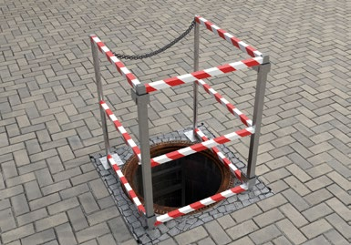

|
Legen Sie als Unternehmerin oder Unternehmer vor Beginn der Arbeiten in Betriebsanweisungen Maßnahmen fest, die ein sicheres Arbeiten gewährleisten. Für besondere Gefährdungen, z. B. vor dem Öffnen von Abmauerungen, sind Erlaubnisscheine erforderlich. Setzen Sie bei Arbeiten in Rohrleitungen und Schächten mindestens einen Sicherungsposten ein. Dieser hat mit den in der Rohrleitung oder dem Schacht tätigen Personen ständige Verbindung zu halten.
Absturz
Technische Maßnahmen, die einen Absturz verhindern, haben Vorrang vor organisatorischen oder persönlichen Maßnahmen.
- Schachtöffnungen sichern, bzw. abdecken.
- Schächte vor Einstieg reinigen.
- Zustand von Steigeisen (z. B. lose, korrodiert) bzw. Steigleitern überprüfen.
Alle geöffneten Einstiege, auch solche, an denen nicht gearbeitet wird, sind gegen Absturz von Personen zu sichern. Eine geeignete technische Schutzmaßnahme gegen Hineinstürzen ist z. B. ein gegen Verschieben gesicherter Rost oder eine gegen Verrutschen gesicherte Absperrung.

Abb. 116 Absturzsicherung an einem geöffneten Schacht
 Berücksichtigen Sie bei der Festlegung der Maßnahmen, dass bei Arbeiten in Rohrleitungen und Schächten auf der Schacht- bzw. Rohrsohle zusätzlich zum Absturz die Gefahr des Ertrinkens bestehen kann. Berücksichtigen Sie bei der Festlegung der Maßnahmen, dass bei Arbeiten in Rohrleitungen und Schächten auf der Schacht- bzw. Rohrsohle zusätzlich zum Absturz die Gefahr des Ertrinkens bestehen kann.
Maßnahmen gegen Absturz sind erforderlich:
| ab 0 m |
Bei Arbeitsplätzen an oder über Wasser |
| ab 2,0 m |
An allen übrigen Arbeitsplätzen |
Tabelle 15 Absturz im Rohrleitungsbau
Verkehrswege
Bei der Benutzung von Steigleitern und Steiggängen mit mehr als 5 m Absturzhöhe müssen Schutzausrüstungen gegen Absturz benutzt werden, z. B. geeignete Anschlagpunkte und Höhensicherungsgerät.
 Bei besonderen Gefahren, z. B. bei Verunreinigungen der Steigleitern können diese Schutzmaßnahmen bereits bei geringeren Höhen erforderlich sein. Zu empfehlen ist ein Dreibein als Anschlageinrichtung, ausgestattet mit einem Höhensicherungsgerät mit integrierter Rettungshubeinrichtung. Die zu sichernde Person benutzt einen Auffanggurt. Die Nutzung der Schutzausrüstung muss bereits an der Einstiegsebene möglich sein. Bei besonderen Gefahren, z. B. bei Verunreinigungen der Steigleitern können diese Schutzmaßnahmen bereits bei geringeren Höhen erforderlich sein. Zu empfehlen ist ein Dreibein als Anschlageinrichtung, ausgestattet mit einem Höhensicherungsgerät mit integrierter Rettungshubeinrichtung. Die zu sichernde Person benutzt einen Auffanggurt. Die Nutzung der Schutzausrüstung muss bereits an der Einstiegsebene möglich sein.
Mindestlichtmaße für den Aufenthalt von Personen in Rohrleitungen und Schächten
Rohrleitungen
Die Unternehmerin bzw. der Unternehmer darf in Rohrleitungen mit einem Lichtmaß von weniger als 600 mm Beschäftigte nicht einsetzen.
In Rohrleitungen dürfen sich Personen nur aufhalten, wenn folgende Mindestlichtmaße eingehalten sind.
| Lichtmaß |
600 mm |
800 mm |
| Kreisprofil |
Durchmesser = 600 mm |
800 mm |
| Rechteckprofil |
Breite/Höhe = 600/600 mm |
600/800 mm |
| Eiprofil |
Breite/Höhe = 600/900 mm |
800/1200 mm |
| Maulprofil |
lichte Höhe = 600 mm |
800 mm |
Tabelle 16 Lichtmaße für begehbare Profile
 Die Unternehmerin oder der Unternehmer darf nur Beschäftigte einsetzen, die Die Unternehmerin oder der Unternehmer darf nur Beschäftigte einsetzen, die
- mindestens 18 Jahre alt,
- körperlich geeignet,
- unterwiesen und
- in der Lage sind, mögliche Gefahren zu erkennen.
Während der Arbeiten in Rohrleitungen muss die Aufsicht führende Person ständig im Bereich der Arbeitsstelle anwesend sein. Bei Einfahrstrecken von mehr als 20 m, dürfen Beschäftigte nur auf seilgeführten Rollenwagen einfahren. In Leitungen der öffentlichen Wasserversorgung gelten abweichende Anforderungen.
Voraussetzung für das Begehen von in Betrieb befindlichen Rohrleitungen in abwassertechnischen Anlagen:
- Lichte Höhe mindestens 1,0 m
- Lichte Höhe ≥ 0,8 m wenn ein Begehen aus betriebstechnischen Gründen notwendig ist und besondere Sicherheitsmaßnahmen getroffen werden.
Voraussetzung für das Begehen von Schächten in abwassertechnischen Anlagen
- Lichte Weite mindestens 1,0 m
- Lichte Weite ≥ 0,8 m: zuvor prüfen, ob besondere Sicherheitsmaßnahmen – z. B. zusätzliche Belüftung, ständige Seilführung – erforderlich sind.
Einstiegsöffnungen für Schächte in abwassertechnischen Anlagen, in denen Arbeiten durchzuführen sind, müssen so groß und so angeordnet sein, dass das Ein- und Aussteigen und Retten von Versicherten jederzeit möglich ist. Dies ist z. B. gegeben, wenn die lichte Weite von Einstiegsöffnungen mindestens 0,8 m beträgt. Abweichend davon müssen Einstiegsöffnungen, die in Verkehrswegen von Fahrzeugen liegen, mindestens eine lichte Weite von 0,6 m haben.
Rettung aus Rohrleitungen und Schächten
Sie als Unternehmerin oder Unternehmer müssen vor Beginn der Arbeiten die Rettung planen. Für die Rettung aus Rohrleitungen und Schächten hat die Unternehmerin bzw. der Unternehmer geeignete Ausrüstung, in der Nähe der Einstiegstelle, bereitzustellen. Im Notfall müssen die Versicherten die Rettungsmaßnahmen selbst einleiten können. Bei einem Aufenthalt z. B. in Räumen größerer Ausdehnung von abwassertechnischen Anlagen oder mit erschwerten Fluchtwegen sind frei tragbare, von der Umgebungsluft unabhängig wirkende Atemschutzgeräte (z. B. Selbstretter) zur Selbstrettung mit zu führen.
Die festgelegten Rettungsmaßnahmen sind regelmäßig, mindestens jedoch einmal jährlich, zu üben, insbesondere die Benutzung von Anschlageinrichtungen, Rettungsgurt, Rettungshubgerät und von Atemschutzgeräten.
 Eine Rettung kann auch mit externen Rettungskräften durchgeführt werden. Eine Rettung kann auch mit externen Rettungskräften durchgeführt werden.

Abb. 117 Bestimmung des lichten Durchmessers di
|


 Der Erfolg der technischen Lüftung ist messtechnisch zu überprüfen.
Der Erfolg der technischen Lüftung ist messtechnisch zu überprüfen.